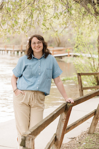

Gracie Davis | WWD 130
Hello world! My name is Gracie Davis and I am from Brigham City, UT. I have been programming for a few years now, and I hope to continue to persue it in the future! I served a mission in Boston, MA, speaking spanish, and have been home for about a year. I love to draw and crochet, and I currently work as an office admin for the Heritage Auto corporate office. I love my job and my amazing family.